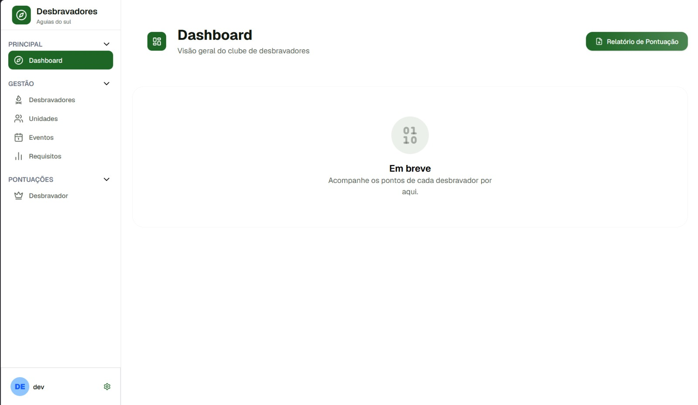

Busco sempre aprender sobre arquitetura, e como melhor escrever fluxo de código. Acredito que um bom software combina código limpo e uma boa experiência para quem utiliza.

Projeto Águias do Sul
Sistema web para gerenciamento de clubes de Desbravadores,
com controle de membros, unidades, eventos e pontuações.